#105 The Immigrant
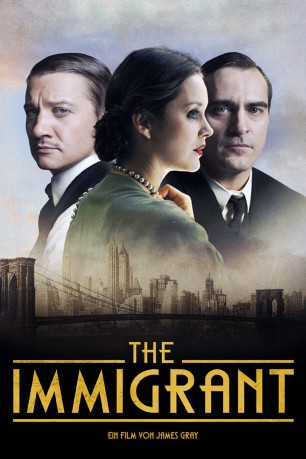 
 IMDB-Wertung: 6.6 / 10
IMDB-Wertung: 6.6 / 10  Metascore: 77
Metascore: 77 
Auf der Suche nach einem Neustart und dem amerikanischen Traum beschließen Ewa Cybulski und ihre Schwester Magda im Jahre 1920, ihre Heimat Polen zu verlassen und in die USA zu emigrieren. Nach der beschwerlichen Schwiffsreise müssen die Frauen die üblichen Untersuchungen auf Ellis Island über sich ergehen lassen. Dabei stellt der zuständige Arzt fest, dass Magda krank ist, woraufhin die beiden Schwestern voneinander getrennt werden. Während Ewa orientierungslos in den Straßen von Manhattan umherzieht, wird ihre Schwester unter Quarantäne gestellt. Abgeschnitten von Magda findet Ewa Zuflucht bei Bruno, der zunächst charmant und hilfsbereit ist und Ewa bei sich aufnimmt. Doch schon bald lässt Bruno seine Maske fallen und drängt Ewa in die Prostitution. Als sie eines Tages dessen Cousin kennenlernt, den Magier Orlando, verliebt sie sich in ihn. Orlando wird zu ihrer einzigen Chance, dem Alptraum zu entfliehen…
Jahr: 2013
Dauer: 120 Minuten
FSK: 12
Land: USA Studio: Weinstein Company, TheTonspuren: DTS - ,
Untertitel:
Auflösung: 1080p (1920×800) Größe: 5826 MB
Genre: Drama, Liebe
Regisseur: James Gray
Drehbuch: James Gray, Ric Menello
Soundtrack: Christopher Spelman
Darsteller:
 Marion Cotillard als Ewa Cybulska
Marion Cotillard als Ewa Cybulska- 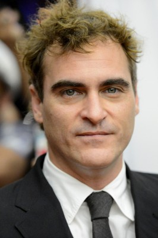 Joaquin Phoenix als Bruno Weiss
- 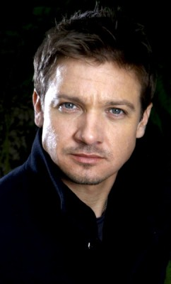 Jeremy Renner als Orlando the Magician / Emil
 Dagmara Dominczyk als Belva
Dagmara Dominczyk als Belva- Jicky Schnee als Clara
- Maja Wampuszyc als Edyta Bistricky
- 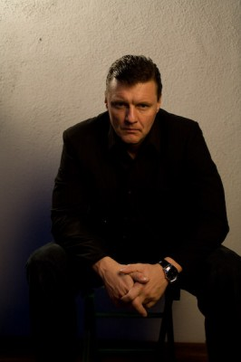 Ilia Volok als Wojtek Bistricky
 Angela Sarafyan als Magda Cybulska
Angela Sarafyan als Magda Cybulska Antoni Corone als Customs Officer Thomas MacNally
Antoni Corone als Customs Officer Thomas MacNally- Patrick Husted als Priest
- Patrick Holden O'Neill als Leo Straub
- 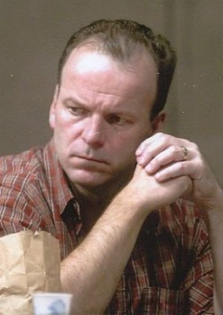 Robert Clohessy als Immigration Official
- Adam Rothenberg als Officer DeKeiffer
- Matthew Humphreys als Cop #1
- 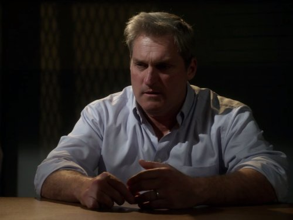 James Colby als A John
- 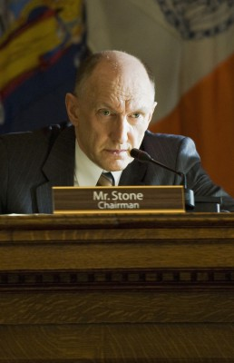 Peter McRobbie als Dr. Knox
- Sofia Black-D'Elia als Not Magda
- Al Linea als Bistricky Cop
- Josh Grisetti als Ellis Island Emcee
- Francine Daveta als The Cossack
- DeeDee Luxe als Bandit's Roost Tart
- Dylan Hartigan als Roger
- 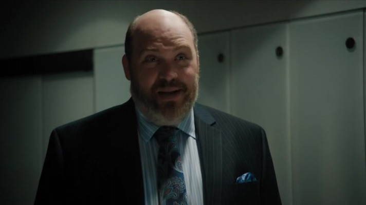 Glenn Fleshler als Political Hack
- Joseph Calleja als Enrico Caruso
- Drew Gregory als John #2
- George Aloi als Ellis Island Minister , uncredited
 James Thomas Bligh als John #1 , uncredited
James Thomas Bligh als John #1 , uncredited- Ross Brodar als Man on Roof , uncredited
- Mark Byrne als Man bumping lamp , uncredited
- 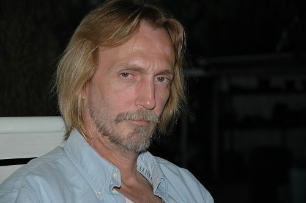 Kevin Cannon als Missionary , uncredited
- Emily Chapman als Immigrant , uncredited
- Matt DeCoster als Ellis Island Translator , uncredited
 John Farrer als Ellis Island Violinist , uncredited
John Farrer als Ellis Island Violinist , uncredited- Liam Ferguson als Orchestra Trombone Player , uncredited
 John Mitchell als A John , uncredited
John Mitchell als A John , uncredited- 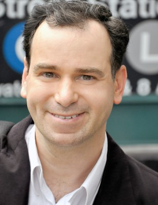 Michael Morana als Michael the Hobo , uncredited
- Francesca Murdoch als Immigrant Kid , uncredited
- 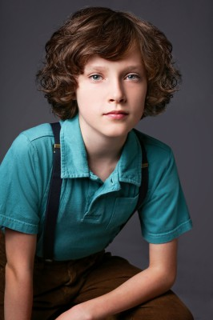 Julian Murdoch als Immigrant Kid , uncredited
- Francesco Plazza als Immigrant , uncredited
- Gabriel Rush als Delivery Boy , uncredited
- 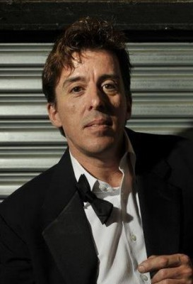 Tom Stratford als Bruno's Cousin , uncredited
- John Weigand als Park Employee , uncredited
- Elena Solovey als Rosie Hertz
- Sam Tsoutsouvas als Oskar Straub
- Margaret Benczak als Another Immigrant
- Tony Ward als Immigration Official
- Christopher Burns als Ellis Island Guard #1
- Susan Gardner als Little Egypt
- Kendra Lansing als African Princess
- Ruby Valentine als The Geisha
Datei: X:\2013(I-M)\Immigrant, The (2013, FSK12, 1920x800).mkv seit 03.02.2015
Festplatte: HD 2013(I-Z)-2014(A-Z)
 Es gibt insgesamt 89 Filme in der Gruppe '2013(I-M)'
Es gibt insgesamt 89 Filme in der Gruppe '2013(I-M)'